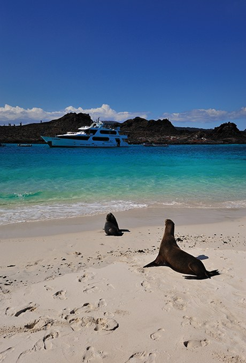
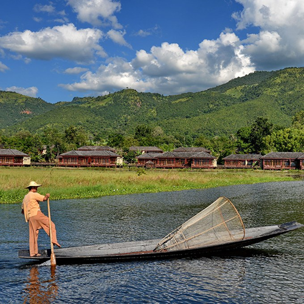
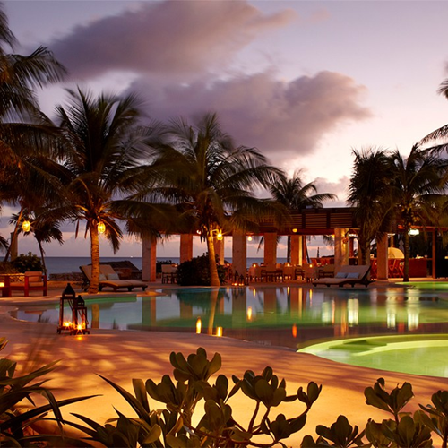

Галапагосские Острова
Лучший медовый месяц для влюбленных – любителей экзотической и дикой природы, это Галапагосские острова. Для такого отдыха отлично подходят короткие или греческие свадебные платья из салона Всё Невестам. На экскурсии по суше и на море вы будете искать "большую пятерку", которая включает в себя массивных черепах, морских игуан и голубоногих олуш. Базируйтесь в интимной обстановке среди многочисленных островов, которые расположены в уединенном месте на вершине потухшего вулкана. Всегда доступна возможность поплавать с Галапагосскими пингвинами, прогуляться на каяке вместе с морскими львами и прокатиться на велосипеде по заповеднику гигантских черепах. Это же мечта натуралиста!
Озеро Инле, Мьянма
Хотите провести медовый месяц в в новой для Вас части Мира? Организуйте себе путешествие по Мьянме (также известной как Бирма), начинающей завораживать уже с быта местных жителей. Озеро Инле знаменито своими плавучими садами и домиками, стоящими на сваях. Лодки - лучший способ познакомиться с этим великолепием. Можно прибегнуть к помощи местных рыбаков, которые управляют своими деревянными каное одним веслом. Более активный тип отдыха – посмотреть пейзаж вокруг курорта Ауреум, проехав на горном велосипеде, который также можно ездить на горячие источники. Через несколько дней поход, заняться верховой ездой или обняться со слонами в соседний лагерь посмотреть на закат с каким-то местным вином.
Ривьера Майя, Мексика
Медовый месяц для смелых и богатых. На экзотическом Карибском побережье интересны не пляжи, хотя они и классные, а Рио Секрето (что переводится как Секретная река) – вереница подземных пещер и рек, по которым посетители могут отправиться в поход, заняться сноркелингом и поплавать среди драматических сталагмитов и сталактитов. В качестве активного отдыха предлагаем прокатиться на мотоцикле по джунглям и пирамидам.
Медельин, Колумбия
Столица мира Вам может показаться мало интересным для медового месяца, но это потому, что мало кто наслаждался всей красотой города, который известен своей вечно весенней температурой. В прохладном районе Побладо шикарно оформлена точка для ночевки во время экскурсии до оживленного города Гуатапе. По приезду туда необходимо подняться на 740 шагов в Эль-Пеньоле, и, пожалуй, спрыгнуть с вершины. Горные дороги выглядят заманчивыми для велосипедистов или произвести полет на параплане высоко над долиной.